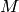
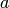
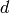
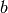
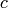
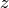
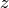
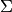

PyMC probability models are linked collections of nodes. These nodes are only informed by the values of their parents. Deterministic instances can compute their values given their parents’ values, Stochastic instances can compute their log-probabilities or draw new values, and Potential instances can compute their log-probabilities. Fitting probability models requires larger- scale coordination and communication.
PyMC provides three objects that fit models:
All three objects are subclasses of Model, which is PyMC’s base class for fitting methods. MCMC and NormApprox, both of which can produce samples from the posterior, are subclasses of Sampler, which is PyMC’s base class for Monte Carlo fitting methods. Sampler provides a generic sampling loop method and database support for storing large sets of joint samples. These base classes implement some basic methods that are inherited by the three implemented fitting methods, so they are documented at the end of this chapter.
The first argument to any fitting method’s init method, including that of MCMC, is called input. The input argument can be just about anything; once you have defined the nodes that make up your model, you shouldn’t even have to think about how to wrap them in a Model instance. Some examples of model instantiation using nodes a, b and c follow:
M = Model(set([a,b,c]))
M = Model({`a': a, `d': [b,c]}) In this case,  will expose  and  as attributes: M.a will be , and M.d will be [b,c].
M = Model([[a,b],c])
If file MyModule contains the definitions of a, b and c:
import MyModule
M = Model(MyModule)
In this case, will expose ,  and  as attributes.
Using a ‘model factory’ function:
def make_model(x):
a = Exponential('a',.5,beta=x)
@deterministic
def b(a=a):
return 100-a
@stochastic
def c(value=.5, a=a, b=b);
return (value-a)**2/b
return locals()
M = Model(make_model(3))
In this case, will also expose , and as attributes.
The MAP class sets all stochastic variables to their maximum a posteriori values using functions in SciPy’s optimize package. SciPy must be installed to use it. MAP can only handle variables whose dtype is float, so it will not work on model (?). To fit the model in examples/gelman_bioassay.py using MAP, do the following
>>> import gelman_bioassay
>>> M = MAP(gelman_bioassay)
>>> M.fit()
This call will cause to fit the model using Nelder-Mead optimization, which does not require derivatives. The variables in DisasterModel have now been set to their maximum a posteriori values:
>>> M.alpha.value
array(0.8465892309923545)
>>> M.beta.value
array(7.7488499785334168)
In addition, the AIC and BIC of the model are now available:
>>> M.AIC
7.9648372671389458
>>> M.BIC
6.7374259893787265
MAP has two useful methods:
If you’re going to use an optimization method that requires derivatives, MAP‘s init method can take additional parameters eps and diff_order. diff_order, which must be an integer, specifies the order of the numerical approximation (see the SciPy function derivative). The step size for numerical derivatives is controlled by eps, which may be either a single value or a dictionary of values whose keys are variables (actual objects, not names).
The useful attributes of MAP are:
One use of the MAP class is finding reasonable initial states for MCMC chains. Note that multiple Model subclasses can handle the same collection of nodes.
The NormApprox class extends the MAP class by approximating the posterior covariance of the model using the Fisher information matrix, or the Hessian of the joint log probability at the maximum. To fit the model in examples/gelman_bioassay.py using NormApprox, do:
>>> N = NormApprox(gelman_bioassay)
>>> N.fit()
The approximate joint posterior mean and covariance of the variables are available via the attributes mu and C:
>>> N.mu[N.alpha]
array([ 0.84658923])
>>> N.mu[N.alpha, N.beta]
array([ 0.84658923, 7.74884998])
>>> N.C[N.alpha]
matrix([[ 1.03854093]])
>>> N.C[N.alpha, N.beta]
matrix([[ 1.03854093, 3.54601911],
[ 3.54601911, 23.74406919]])
As with MAP, the variables have been set to their maximum a posteriori values (which are also in the mu attribute) and the AIC and BIC of the model are available.
In addition, it’s now possible to generate samples from the posterior as with MCMC:
>>> N.sample(100)
>>> N.trace('alpha')[::10]
array([-0.85001278, 1.58982854, 1.0388088 , 0.07626688, 1.15359581,
-0.25211939, 1.39264616, 0.22551586, 2.69729987, 1.21722872])
>>> N.trace('beta')[::10]
array([ 2.50203663, 14.73815047, 11.32166303, 0.43115426,
10.1182532 , 7.4063525 , 11.58584317, 8.99331152,
11.04720439, 9.5084239 ])
Any of the database backends can be used (chapter chap:database).
In addition to the methods and attributes of MAP, NormApprox provides the following methods:
It provides the following additional attributes:
XXX DESCRIBE WHERE TO GET TUNING PARAMETER TRACES
The MCMC class implements PyMC’s core business: producing ‘traces’ for a model’s variables which, with careful thinning, can be considered independent joint samples from the posterior. See chapter chap:tutorial for an example of basic usage.
MCMC‘s primary job is to create and coordinate a collection of ‘step methods’, each of which is responsible for updating one or more variables. The available step methods are described below. Instructions on how to create your own step method are available in chapter chap:extending.
MCMC provides the following useful methods:
MCMC samplers’ step methods can be accessed via the step_method_dict attribute. M.step_method_dict[x] returns a list of the step methods M will use to handle the stochastic variable x.
Step method objects handle individual stochastic variables, or sometimes groups of them. They are responsible for making the variables they handle take single MCMC steps conditional on the rest of the model. Each subclass of StepMethod implements a method called step(), which is called by MCMC. Step methods with adaptive tuning parameters can optionally implement a method called tune(), which causes them to assess performance so far and adjust.
The major subclasses of StepMethod are Metropolis and Gibbs. PyMC provides several flavors of the basic Metropolis steps, but the Gibbs steps are not ready for use as of the current release.
Metropolis and subclasses implement Metropolis-Hastings steps. To tell an
MCMC object to handle a variable  with a Metropolis step
method, you might do the following:
with a Metropolis step
method, you might do the following:
M.use_step_method(Metropolis, x, proposal_sd=1., proposal_distribution='Normal')
Metropolis itself handles float-valued variables, and subclasses DiscreteMetropolis and BinaryMetropolis handle integer- and boolean- valued variables, respectively. Subclasses of Metropolis must implement the following methods:
Note that there is no accept() method; if a proposal is accepted, the variables’ values are simply left alone. Subclasses that use proposal distributions other than symmetric random-walk may specify the ‘Hastings factor’ by changing the hastings_factor method. See chapter chap:extending for an example.
Metropolis‘ init method takes the following arguments:
A float, defaulting to 1. If the scale argument is provided but not proposal_sd, proposal_sd is computed as follows:
if all(self.stochastic.value != 0.):
self.proposal_sd = ones(shape(self.stochastic.value)) * \
abs(self.stochastic.value) * scale
else:
self.proposal_sd = ones(shape(self.stochastic.value)) * scale
Metropolis step methods adjust their initial proposal standard deviations using an attribute called adaptive_scale_factor. When tune() is called, the acceptance ratio of the step method is examined and this scale factor is updated accordingly. If the proposal distribution is normal, proposals will have standard deviation self.proposal_sd * self.adaptive_scale_factor.
By default, tuning will continue throughout the sampling loop, even after the burnin period is over. This can be changed via the tune_throughout argument to MCMC.sample. If an adaptive step method’s tally flag is set (the default for Metropolis), a trace of its tuning parameters will be kept. If you allow tuning to continue throughout the sampling loop, it is important to verify that the ‘Diminishing Tuning’ condition of [tuning] is satisfied: the amount of tuning should decrease to zero, or tuning should become very infrequent.
If a Metropolis step method handles an array-valued variable, it proposes all elements independently but simultaneously. That is, it decides whether to accept or reject all elements together but it does not attempt to take the posterior correlation between elements into account. The AdaptiveMetropolis class (see below), on the other hand, does make correlated proposals.
This class is just like Metropolis, but specialized to handle Stochastic instances with dtype int. The jump proposal distribution can either be 'Normal', 'Prior' or 'Poisson'. In the normal case, the proposed value is drawn from a normal distribution centered at the current value and then rounded to the nearest integer.
This class is specialized to handle Stochastic instances with dtype bool.
For array-valued variables, BinaryMetropolis can be set to propose from the prior by passing in dist="Prior". Otherwise, the argument p_jump of the init method specifies how probable a change is. Like Metropolis‘ attribute proposal_sd, p_jump is tuned throughout the sampling loop via adaptive_scale_factor.
For scalar-valued variables, BinaryMetropolis behaves like a Gibbs sampler, since this requires no additional expense. The p_jump and adaptive_scale_factor parameters are not used in this case.
The AdaptativeMetropolis (AM) step method works like a regular Metropolis step method, with the exception that its variables are block-updated using a multivariate jump distribution whose covariance is tuned during sampling. Although the chain is non-Markovian, it has correct ergodic properties (see [Haario:2001]).
To tell an MCMC object to handle variables ,  and  with an AdaptiveMetropolis instance, you might do the
following:
and  with an AdaptiveMetropolis instance, you might do the
following:
M.use_step_method(AdaptiveMetropolis, [x,y,z], \
scales={'x':1, 'y':2, 'z':.5}, delay=10000)
AdaptativeMetropolis‘ init method takes the following arguments:
In this algorithm, jumps are proposed from a multivariate normal distribution with covariance matrix . The algorithm first iterates until delay samples have been drawn (if greedy is true, until delay jumps have been accepted). At this point, is given the value of the empirical covariance of the trace so far and sampling resumes. The covariance is then updated each interval iterations throughout the entire sampling run [1]. It is this constant adaptation of the proposal distribution that makes the chain non-Markovian.
Conjugate submodels (see [Gelman:2004]) can be handled by Gibbs step methods rather than the default Metropolis methods. Gibbs step methods are Metropolis methods whose acceptance rate is always 1. They can be convenient because they relieve the user from having to worry about tuning the acceptance rate, but they can be computationally expensive. When variables are highly dependent on one another, better mixing can often be obtained by using AdaptiveMetropolis even when Gibbs step methods are available.
Alpha versions of Gibbs step methods handling the following conjugate submodels are available in the sandbox module, but they are not recommended and will not be assigned automatically:
However, if you implement a custom Gibbs step method, subclassing the Gibbs class will ensure interopera
Gibbs step methods have the following class attributes:
A Gibbs step method can handle variables that are not of their target class, as long as all their children are of the appropriate class. If this is the case, the step method’s conjugate attribute will be set to False and its acceptance rate will no longer be 1.
Gibbs step methods are easy to use manually. To tell an MCMC object
to handle a variable using the GammaNormal class, simply
use the call
M.use_step_method(GammaNormal, x)
To indicate a general preference for Gibbs step methods vs. Metropolis step methods, set the following global integer values:
There is currently no way for a stochastic variable to compute individual terms of its log-probability; it is computed all together. This means that updating the elements of a array-valued variable individually would be inefficient, so all existing step methods update array-valued variables together, in a block update.
To update an array-valued variable’s elements individually, simply break it up into an array of scalar-valued variables. Instead of this:
A = Normal('A', value=zeros(100), mu=0., tau=1.)
do this:
A = [Normal('A_%i'%i, value=0., mu=0., tau=1.) for i in xrange(100)]
An individual step method will be assigned to each element of A in the latter case, and the elements will be updated individually. Note that A can be broken up into larger blocks if desired.
Every step method subclass (including user-defined ones) that does not require any init arguments other than the stochastic variable to be handled adds itself to a list called StepMethodRegistry in the PyMC namespace. If a stochastic variable in an MCMC object has not been explicitly assigned a step method, each class in StepMethodRegistry is allowed to examine the variable.
To do so, each step method implements a class method called competence(stochastic), whose only argument is a single stochastic variable. These methods return values from 0 to 3; 0 meaning the step method cannot safely handle the variable and 3 meaning it will most likely perform well for variables like this. The MCMC object assigns the step method that returns the highest competence value to each of its stochastic variables.
This class serves as a container for probability models and as a base class for the classes responsible for model fitting, such as MCMC. Like any Python class, its properties are inherited by subclasses.
Model‘s init method takes the following arguments:
Models’ useful methods are:
The helper function graph produces graphical representations of models (see [Jordan:2004]).
Models have the following important attributes:
In addition, models expose each node they contain as an attribute. For instance, if model M were produced from model ((?)) M.s would return the switchpoint variable. It’s a good idea to give each variable a unique name if you want to access them this way.
Samplers fit models with Monte Carlo fitting methods, which characterize the posterior distribution by approximate samples from it. They are initialized as follows: Sampler(input=None, db='ram', name='Sampler', reinit_model=True, calc_deviance=False). The input argument is a module, list, tuple, dictionary, set, or object that contains all elements of the model, the db argument indicates which database backend should be used to store the samples (see chapter chap:database), reinit_model is a boolean flag that indicates whether the model should be re-initialised before running, and calc_deviance is a boolean flag indicating whether deviance should be calculated for the model at each iteration. Samplers have the following important methods:
The same as sample, but the sampling is done interactively: you can pause sampling at any point and be returned to the Python prompt to inspect progress and adjust fitting parameters. While sampling is paused, the following methods are useful:
In addition, the sampler attribute deviance is a deterministic variable valued as the model’s deviance at its current state.
Footnotes
| [1] | The covariance is estimated recursively from the previous value and the last interval samples, instead of computing it each time from the entire trace. |